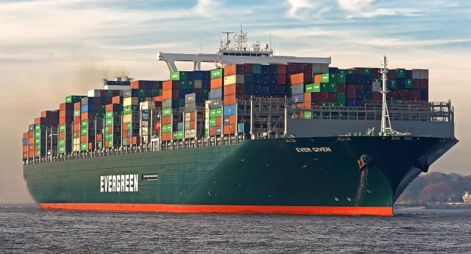

Los remolcadores consiguen mover el 'Ever Given', este lunes.
El canal de Suez restablece el tráfico tras conseguir reflotar el buque atascado
MARC ESPAÑOL | Ismaília 33
Las maniobras logran desencallar el 'Ever Given' después de seis días. El presidente egipcio Al Sisi dice que la crisis ha finalizado, pero más de 400 buques siguen a la espera para poder atravesar la vía.
El déficit se dispara por encima del 10% del PIB en 2020 por la pandemia
LAURA DELLE FEMME | Madrid 17
Los números rojos de las administraciones aumentaron por la caída de ingresos y la subida del gasto ante la crisis.

El coronavirus provoca la mayor subida del gasto público en democracia
EN DIRECTO
Madrid vuelve a estar en riesgo muy alto al superarlos 250 casos por 100.000 habitantes
Sanidad comunica 15.501 nuevos contagios por coronavirus y 189 muertos desde el viernes.